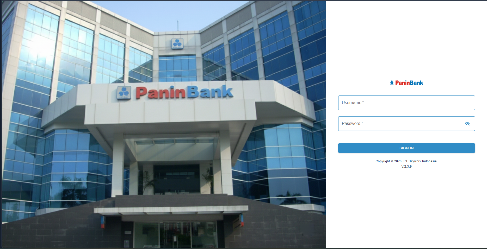
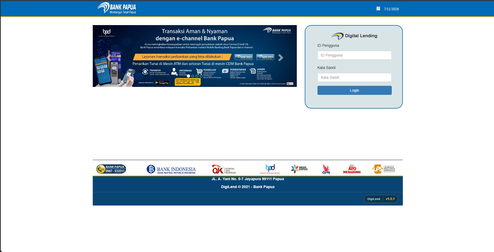
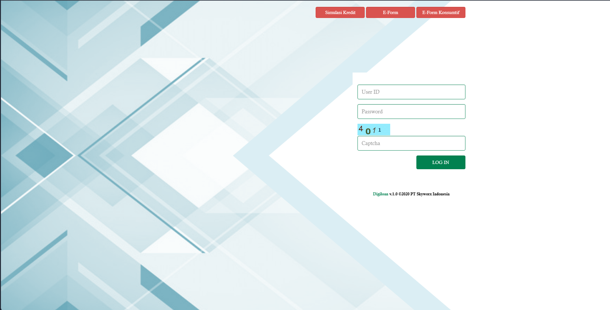
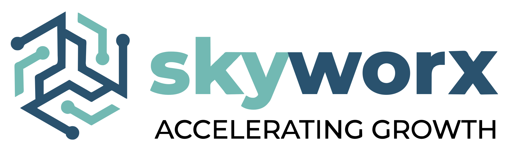
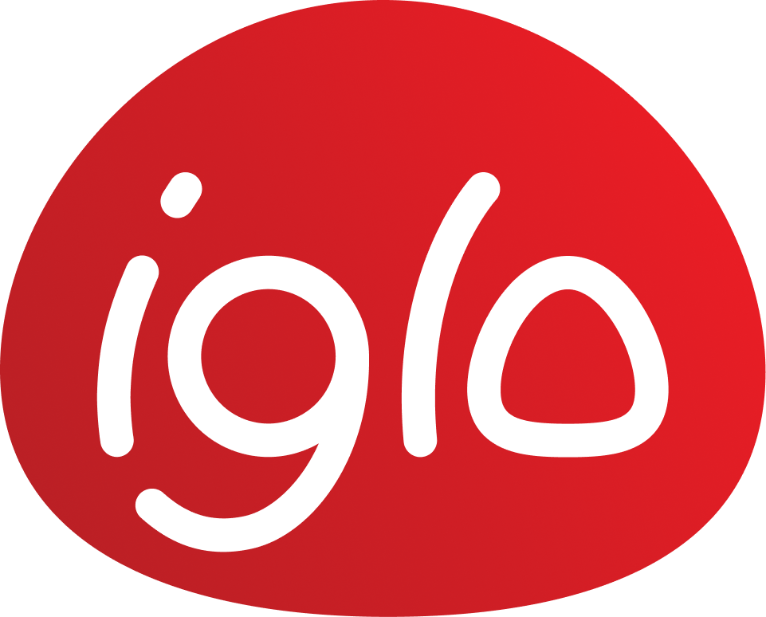

Backend
C#, ASP.NET, PHP, JavaScript, Python, dan Java.
Didin Irfandi / Backend & .NET Developer
Backend dan .NET Developer dengan pengalaman profesional sejak 2019 dalam pengembangan serta pemeliharaan aplikasi enterprise, REST API, dan sistem perbankan.
C# / ASP.NET / REST API
01 / Tentang
Saya menangani pengembangan dan pemeliharaan backend aplikasi enterprise, dari API dan business logic hingga database dan dukungan rilis.
Terbiasa melakukan bug fixing, troubleshooting, root cause analysis, validasi data, optimasi query, testing, serta berkolaborasi dengan QA, Frontend, dan user.
C#, ASP.NET, PHP, JavaScript, Python, dan Java.
Node.js, Express.js, NestJS, AdonisJS, Spring Boot, dan Laravel.
SQL Server, PostgreSQL, Oracle, dan MongoDB.
02 / Karya pilihan

01Kontribusi backend pada Loan Origination System yang mendukung proses pengajuan dan pengelolaan kredit Bank Panin.
Lihat situs ↗
02Pengembangan layanan backend untuk membantu alur pengajuan kredit BPD Papua berjalan terstruktur dan terintegrasi.
Lihat situs ↗
03Kontribusi backend pada sistem LOS BPD Bali untuk mendukung pemrosesan data dan kebutuhan alur kredit pengguna bank.
Lihat situs ↗Sebagai Software Engineer dengan fokus Backend Developer, menangani perbaikan bug dan pengembangan backend aplikasi perusahaan sesuai kebutuhan bisnis.
Aplikasi ticketing Helpdesk Jarkomdat Dukcapil Kemendagri untuk mendukung penanganan pengaduan jaringan komunikasi data.
03 / Perjalanan
Perjalanan profesional sejak 2019 dalam pengembangan aplikasi enterprise, sistem perbankan, dan layanan digital.
Politeknik Pos Indonesia · 2016–2019
Onsite di PT Skyworx Indonesia, menangani backend aplikasi Loan Origination System mobile dan web: pengembangan API, bug fixing, troubleshooting, root cause analysis, validasi data, optimasi query, testing, dan dukungan rilis.

Onsite di PT Triputra Agro Persada Group sebagai Software Engineer dengan peran Backend Developer. Bertanggung jawab mengatasi bug serta mengembangkan aplikasi backend perusahaan untuk memberikan solusi yang efektif dan efisien sesuai kebutuhan bisnis.

Mengembangkan dan memelihara EOS, aplikasi ticketing Helpdesk Jarkomdat Dukcapil Kemendagri, untuk mendukung penanganan pengaduan jaringan komunikasi data.
Mengembangkan aplikasi penjualan, barang masuk, dan barang keluar untuk perusahaan penyewa aplikasi.

Mengembangkan SIMPEG untuk perusahaan Dana Pensiun Bank Mandiri serta aplikasi Human Resource Information System (HRIS).
04 / Kontak
Ceritakan kebutuhan, tantangan, atau ide Anda. Saya akan membalas melalui email secepatnya.